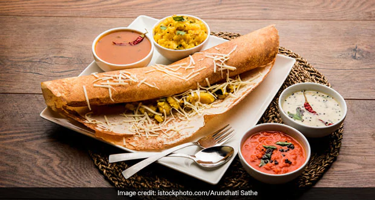
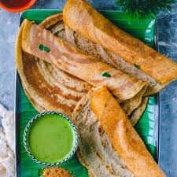

About This Website

Why I made this website??
For people who are new to the area and don't know where to go to taste the most delecious dosas in Bangalore.
Don't worry I am here to help you with it.
I created this website to make it easier for people to access the information about the famous dosa eateries in Bangalore.
How to make use of this website??
Step 1: Click on the explore page and a menu of dosas is displayed for you.
Step 2: Click on the image of the dosa you want to taste now a table of the names of eateries is displayed.
Step 3: Click on the name of the eatery you want to try now you are directed to the google page of the eatery where you can access the maps and reviews of the eatery.

About the Creators
I am Aditi, a sixteen year old genzee.
I am a foodie and always look out for local delicasies whenever I get the the chance to travel.
I realised that there was no website on the net about the very famous dosas in Namma Bengaluru
So I decided to make a prototype with 4 different kinds of Dosa.
Home